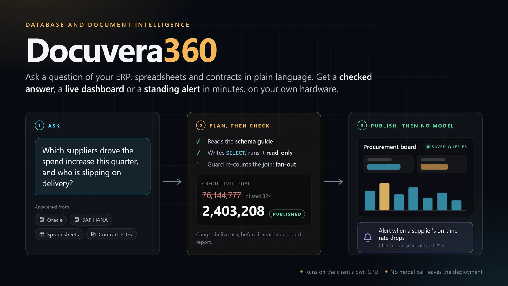
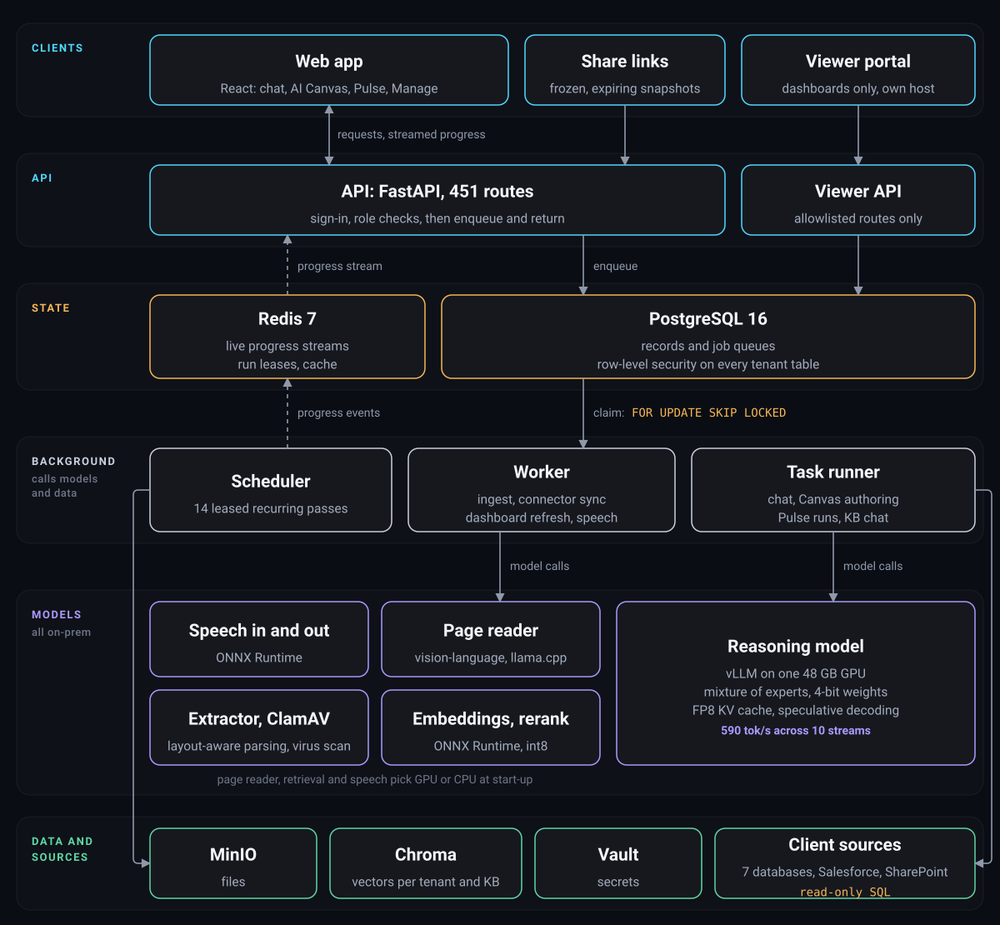

Docuvera360
Project Overview
Docuvera360 is the analytics platform I've been building at TrellisSoft since May 2026. A business user asks a question in plain language, and agents read the company's ERP databases, spreadsheets and documents, write and check the queries, and come back with an answer, a live dashboard or a standing alert. All of it runs on the client's own infrastructure, models included.

What it replaces is the usual chain behind a business dashboard: a data-engineering pipeline, a warehouse or semantic model, a Power BI or Fabric build, and a review cycle. That chain takes weeks to produce a first version and needs a fresh ticket every time the question changes. In Docuvera360 a dashboard described in one sentence is built, checked and published in a median of 137 seconds from spreadsheets and 285 seconds from a production database.
Two decisions shape most of the system. The model plans and writes, but it never does the arithmetic: data steps run in code, and every figure is checked against the source before it reaches a sentence. And once a dashboard or an alert is built, it's compiled into saved queries, so keeping it fresh costs no model time at all. Most of this page is about how those two ideas play out, and about what it took to run a capable reasoning model, document reading and retrieval on a single on-prem GPU.
The Problem
Every company has questions its data could answer and its data team can't get to in time. "Which suppliers are driving the cost overrun?" sits across an ERP, a dozen spreadsheets and a folder of contracts. Answering it the usual way means ingestion, a model in the warehouse, a report and a review, and by the time that ships the question has usually moved on.
The stack is built for the questions someone predicted. Pipelines and dashboards encode last quarter's questions, and a new one means new ingestion, a new model and a new report. Self-service BI doesn't change that much, because it still needs a modelled dataset, a trained analyst, and someone who knows which of the ERP's thousands of tables hold the answer.
Generic AI chat looks like the shortcut. It can't reach in-house systems safely, though, and when it does write SQL it produces fluent answers on top of joins that double-count and filters nobody asked for. A number that's wrong by a factor of thirty reads exactly as confidently as a right one. On top of that, a lot of this data can't leave the building at all: finance, healthcare and public-sector regulations rule out sending ERP rows and contracts to a public AI service.
Docuvera360 drops the build step. Each query is worked out on the fly against whatever the client has connected, so a department gets its answer the day it asks. These are the kinds of questions it's built for:
| Industry | The question | What comes back |
|---|---|---|
| Manufacturing | Which suppliers drove the spend increase this quarter, and who is slipping on delivery? | A procurement dashboard over ERP purchase orders and supplier spreadsheets, plus an alert when a supplier's on-time rate drops |
| Retail and consumer | Forecast next quarter's sales by region and flag stores trending down. | Backtested forecasts with ranges, a regional board and a weekly exception alert |
| Banking and finance | Show receivables ageing and cash position across entities in one currency. | Totals split by currency instead of mixed, a liquidity board and a Word briefing for the CFO |
| Healthcare | Which departments are over budget on supplies, and what do the contracts allow? | ERP spend joined with clauses retrieved from contract PDFs, in one answer |
| Logistics | Which lanes miss delivery targets most, and what changed this month? | Trend and variance analysis with a scheduled alert on the worst lanes |
| Public sector | Track spend against budget by department and explain each variance. | A published board for officials on the viewer portal, refreshed on schedule |
| SaaS and IT services | Which accounts are likely to churn, and why? | Segmentation and churn analysis with the drivers named and a watch-list alert |
What It Does
One workspace serves every role, from analyst to platform operator, and each person sees only what their role grants. Every answer, dashboard and alert runs over the company's own sources.
Agentic Chat
Ask across databases, spreadsheets and documents, by text or voice. The answer comes back checked, with a chart, a table, a forecast or a Word or PDF report. Eight skill packs give the agents analyst playbooks for work like forecasting, churn, profitability, liquidity and data quality.
AI Canvas
Describe a dashboard and the agent drafts it, binds the filters and checks it for contradictions. The published board is versioned, refreshes on a schedule, and needs no model when someone opens it.
Pulse Alerts
Write an alert as a sentence. It becomes a saved measurement plan that runs in code on a schedule and reports in the app and by email.
Knowledge Bases
Connect seven databases, Salesforce, SharePoint and 26 file types. Guided KB writes the schema guide the agents read before they touch a table.
Viewers and share links
Viewers get a dashboards-only portal on its own host. People outside the company get revocable, expiring links to frozen snapshots.
Manage and operate
Admins run users, roles, retention, credits and live AI runs. Credits are reserved before each AI action and settled after it. Platform operators get tenants, plans, a feature registry, platform health and an audit log with an integrity check.
Architecture

A request returns as soon as its work is queued. The API (FastAPI, 451 routes) authenticates the user, checks the permission on the route and writes a job to PostgreSQL. The worker, the task runner and the scheduler claim jobs from there, call the on-prem models and the client's sources, and publish progress events to Redis, which the browser receives as a live stream. That's why an answer that takes four minutes of model reasoning never holds a web request open.
Jobs are PostgreSQL rows claimed with FOR UPDATE SKIP LOCKED. Two services never take the same job,
nobody waits on a lock someone else holds, and a stopped worker's jobs are picked up by another. Keeping the queue in
the system of record also means one less service to install and secure on a client's servers. The scheduler
runs fourteen recurring passes, each under a lease.
Published dashboards take a separate path. The viewer portal runs on its own VM with its own backend, which answers only an allowlisted set of routes, and it keeps serving when the main application is down. On the model side, the reasoning model runs on vLLM, the page reader on llama.cpp, and embeddings, reranking and speech on ONNX Runtime. The page-reader, retrieval and speech hosts check for a GPU at start-up and fall back to CPU when none is free, so a smaller install still works, just slower.
How an Answer Gets Made
The engine uses the model to plan and to write, and nothing else. Data steps run in code, and figures are checked against the source before they reach a sentence. This is the path a question takes:
| Stage | How it works |
|---|---|
| Ingest | Virus scan, layout-aware extraction and a compact vision-language page reader; a page has to clear an OCR quality score of 70. Spreadsheets load into DuckDB as tables. |
| Index | Chunking that keeps sections and tables whole, int8 ONNX multilingual embeddings, and one vector collection per tenant and knowledge base. |
| Retrieve | BM25 (weight 0.4) plus vector search (0.6), fused by reciprocal rank with k = 60, then a cross-encoder reranks 12 candidates within 3 seconds. |
| Understand the source | Guided KB schema guides, catalog search, cached column metadata, and query templates that worked before, replayed per workflow and user. |
| Plan and act | One loop of JSON-schema-constrained decisions over 12 tools, from SQL and document search to sandboxed Python and export. |
| Verify | Deterministic guards re-run queries to catch unrequested filters, mixed currencies, join fan-out, sparse columns and dates outside the data, then replace or disclose the figure. |
| Write | Streamed answers, a continue-then-close ladder at the output cap, and a sectioned Word and PDF writer. |
| Forecast | Ten statistical methods plus ARIMA, ranked by rolling-origin backtest; the top three are averaged, with Student-t ranges. |
| Serve | Published dashboards and alerts compile to saved, parameterised queries. No model runs at view or check time. |
The guard that caught a 32x error
The query tool doesn't take the agent's aggregate on trust. Before anything is written, it re-runs the aggregate without filters the user didn't ask for, splits totals that mix currencies, checks for sparse columns and dates outside the data, and proves join fan-out with two counts. Fan-out is the classic text-to-SQL failure: join suppliers to a table that has several rows per supplier, and every supplier-level figure is repeated once per matching row. The SUM comes back multiplied and nothing in the SQL looks wrong.
In live use, a supplier join inflated a credit-limit total 32-fold, to 76,144,777. The guard's counts disagreed, the figure was replaced, and the answer published the true 2,403,208. When a guard can't establish a figure at all, the answer says so instead of guessing.
-- run on the agent's join, with the agent's filters, before its SUM is trusted
SELECT COUNT(*) AS joined_rows,
COUNT(DISTINCT s.supplier_id) AS suppliers
FROM suppliers s
JOIN purchase_orders po ON po.supplier_id = s.supplier_id;
-- joined_rows > suppliers: every supplier-level value repeats once per order,
-- so SUM(s.credit_limit) over this join is inflated. The guard recomputes the
-- total at supplier grain, or discloses that it couldn't, before anything is written.Agents that compile their work
Canvas boards and Pulse alerts use the model only while they're being designed. What comes out of that session is a set of saved, parameterised queries plus the layout or measurement plan around them, and that's what runs from then on. A published board refreshes by running its queries; a scheduled alert check runs its plan in code.
This was the largest single speed-up in the project. Originally each alert run had the agent rediscover the measurement, which cost 29 to 66 seconds of model time per check. The compiled plan does the same check in 0.25 seconds with no model call, and the GPU stays free for people asking new questions.
Structured runs
Every decision the agent makes is a JSON-schema-constrained object, typed with Pydantic on the Python side, so every tool call arrives in a shape the orchestrator can validate before it acts. The answer streams as it's written. When a long report reaches the output cap, a continue-then-close ladder carries it on and then closes it properly, so it ends with its last section instead of stopping mid-sentence.
Retrieval and reading documents
Spreadsheets aren't flattened into text. They load into DuckDB as tables, so a question about them is answered with a query. Documents go through a virus scan, layout-aware extraction and a vision-language page reader that handles a scanned page in 1 to 2 seconds on GPU, and chunking keeps sections and tables whole. Each tenant and knowledge base gets its own vector collection.
Retrieval fuses keyword search and vector search by reciprocal rank, then a cross-encoder reorders the shortlist. Keyword search catches part numbers, clause references and names that embeddings blur, vectors catch paraphrase, and the reranker reads the question and the passage together before anything reaches the model. Put next to the SQL tools, that's what lets a contract clause and an ERP total land in the same answer.
Memory and forecasting
Query templates that worked are saved per workflow and per user and replayed on the next question, so the agent stops rediscovering the same joins every time. Forecasts don't come from the language model at all: ten statistical methods plus ARIMA are ranked by rolling-origin backtest, the best three are averaged, and the range comes from a Student-t interval.
Serving It on One GPU
All of the above depends on a reasoning model that's fast enough for several analysts at once, on hardware a client will actually buy. I ran a bake-off of five quantised candidates on vLLM 0.30 and picked a mixture-of-experts profile with 4-bit weights, an FP8 KV cache and speculative decoding. A mixture-of-experts model runs only a fraction of its weights for each token, which is why it decodes quickly for its size, and the FP8 cache is what leaves room for many long requests at once.
Against the profile it replaced, decode across 10 concurrent streams went from 225 to 590 tokens per second, and prefill from 1,309 to 4,679 tokens per second. The KV cache holds 11.76 requests at the full 131,072-token context, so analysts work in parallel on one 48 GB card instead of queueing behind each other. The figures below are from a vLLM 0.30 benchmark of the selected profile in September 2026.
In the same benchmark, 65 to 69 percent of the speculatively drafted tokens were accepted, and each accepted token saves the full model one sequential decoding step. Separately, keeping prompt prefixes stable from one call to the next lets vLLM reuse the cached prefill instead of recomputing it, which cut a 37,000-token prefill from 27.8 seconds to 5.3.
Where the Time Goes
Lookups take milliseconds and reasoning takes minutes. Every lookup inside an answer finishes in under two seconds at the p90; the minutes go to model reasoning, which streams to the browser or runs as a queued job. A simple question returns in 12 to 97 seconds, a change to an existing dashboard such as a new filter takes a median of 44 seconds, and a nine-section board report with verified figures takes about five minutes.
| Stage | Runs | Measured | Conditions |
|---|---|---|---|
| Embed the question (CPU) | Live, inside an answer | 3.5 ms | Per query, int8 ONNX on 2 CPU threads, benchmark |
| Spreadsheet query (DuckDB) | Live, inside an answer | 20 to 110 ms | 13 live tool calls, Aug 2026 |
| Database query (Oracle, SAP HANA) | Live, inside an answer | 0.54 s median, 1.8 s p90 | 284 live tool calls, Aug 2026 |
| Rerank 10 passages (CPU) | Live, inside an answer | 0.65 s | Cross-encoder, int8 ONNX, 256 tokens each, benchmark |
| Answers, dashboards and reports | Live, streamed | 12 s to 5 min | Live, Sep to Oct 2026: from a 12 s simple answer to a 307 s nine-section Word report |
| Scheduled alert check (no model) | Background | 0.25 s | Saved measurement plan, live, Oct 2026 |
| Read a scanned page (GPU) | Background | 1 to 2 s per page | Vision-language page reader in 2.3 GB of GPU memory |
| Transcribe a voice clip (CPU) | Background | 1.5 s median (0.8 to 5.4 s) | Clips of 4.8 to 29.4 s, 2 CPU threads, Sep 2026 |
| Index a text or Office file | Background | 2 to 13 s per file | Once claimed by a worker, live, Sep 2026 |
| Read a scanned page (CPU) | Background | 43 to 65 s per page | 768 image tokens on 4 CPUs, the fallback when no GPU is free |
Measured fixes
Each row is the same case measured before and after a change.
| Case | Before | After | Speed-up | Conditions |
|---|---|---|---|---|
| Scheduled alert check | 29 s | 0.25 s | 116x | Agent rediscovery took 29 to 66 s per run; the saved plan runs with no model call |
| Speech-to-text, 3 audio clips | 137.3 s | 3.6 s | 38x | Same clips on the same CPU laptop, total seconds |
| Rerank, per passage | 1.05 s | 0.065 s | 16x | 21 s for 20 passages before, 0.65 s for 10 after, on CPU |
| Dashboard filter edit | 142 s | 24.6 s | 5.8x | Same supplier-filter request, live |
| Prefill a 37k-token prompt | 27.8 s | 5.3 s | 5.2x | Cold prompt against cached prefix |
| Index a 4-page PDF | 47.5 s | 10.2 s | 4.7x | Upload to searchable, same file and machine |
| Index a 72 KB text file | 37.7 s | 9.7 s | 3.9x | Upload to searchable, same file and machine |
| Nine-section Word report | 472 s | 307 s | 1.5x | Same live request |
The pattern held across the list: the biggest wins came from taking the model out of repeat work, and the smallest from trimming what it reads and writes. Indexing got 3.9 to 4.7x faster by removing a per-chunk model pass and running embedding batches concurrently. Reranking got 16x cheaper per passage by moving to an int8 ONNX cross-encoder.
Security, Privacy and Deployment
Isolation, access and query safety are enforced by the database and by code, never by a prompt.
Tenant isolation
Row-level security is enabled and forced on every tenant table in PostgreSQL, 85 of them. The application connects as a role with neither superuser nor bypass rights, and it refuses to boot in staging or production if it has either. Vector collections are scoped per tenant and knowledge base, so retrieval can't cross tenants either.
ALTER TABLE dashboards ENABLE ROW LEVEL SECURITY;
ALTER TABLE dashboards FORCE ROW LEVEL SECURITY; -- applies to the table owner too
CREATE POLICY tenant_isolation ON dashboards
USING (tenant_id = current_setting('app.tenant_id')::uuid)
WITH CHECK (tenant_id = current_setting('app.tenant_id')::uuid);
-- the app role has no SUPERUSER and no BYPASSRLS; startup checks bothAccess, queries and generated code
Passwords are hashed with bcrypt, accounts lock after five failures, and sign-in supports email or authenticator codes, passkeys, step-up re-authentication and a 15-minute idle timeout. There are five roles, every endpoint carries a permission that CI checks for, and a cross-tenant admin action needs elevation with a stated reason.
Agent-written SQL goes through a parser that allows SELECT only and blocks dangerous functions per dialect. Results are capped at 100 rows by default and 10,000 for aggregates, and sensitive columns are gated before results reach the model. Agent-written Python runs in a separate process with memory, CPU and file limits, and charts render in a sandboxed iframe that can't reach the network.
Audit and supply chain
Audit rows are SHA-256 hash-chained, partitioned by month and append-only, so tampering shows up when the chain is checked. PII redaction is forced on in production and retention is set per tenant. Secrets come from HashiCorp Vault, containers run non-root and read-only, and ClamAV scans every upload. The release pipeline attaches an SPDX SBOM and a cosign signature to every image.
Deployment
One set of Docker Compose overlays builds development, staging and production. Production refuses unsafe settings at boot, including auto-migration, auto-seeding and a missing Vault. A GPU overlay attaches itself when a GPU is present, multi-host overlays split the API, data, worker and scheduler tiers, and the viewer VM runs on its own. By default no model call leaves the deployment: the app won't start unless embeddings are served locally, and the reasoning model runs on the client's own GPU.
Tech Stack
Models and inference
Agents and retrieval
Application
Infrastructure and build
My Role and How It Was Built
I own the AI architecture of Docuvera360 and the engineering that took it from first commit to a governed, on-prem product. The first commit landed on 21 May 2026, version 1.0.0 shipped four weeks later, and the project had taken 510 pull requests by October. I'm the top contributor, with 456 of the 1,020 non-merge commits. My part of it:
- Designed the agent engine: the typed single-controller loop, the deterministic guards that re-check figures against the source, and the compile-once runtime that serves dashboards and alerts with no model.
- Selected, quantised and tuned the on-prem model stack, from the five-candidate serving bake-off to vision-language document reading and retrieval and speech hosts that fall back to CPU on their own.
- Profiled and removed latency across the stack, from the 116x faster alert check to 3.9 to 4.7x faster document indexing.
- Carried tenancy, security and release engineering to production standard.
Eight GitHub Actions workflows run linting, type checks, a production build and a migration check on every change, along with bandit, pip-audit, npm audit, gitleaks, Semgrep and Trivy. Releases follow semantic versioning and Conventional Commits, and a tag triggers the pipeline that publishes signed amd64 and arm64 images with an SBOM. The production web build takes 14.7 seconds and comes to 1.5 MB gzipped, and a warm rebuild of the full stack takes about two minutes. A feature ships only after a live run through the whole stack on ERP and spreadsheet data.
What's Next
- Single sign-on through OIDC, for customers who manage identity centrally.
- Governed write-back, where an agent proposes an action in a business system, waits for a person to confirm it, and then carries it out.
- More sources: S3, SFTP, Outlook, cloud-drive sync and MongoDB, next to the seven databases, Salesforce, SharePoint and file upload that are live today.
- Skill packs written by each tenant, so a customer can teach the agents its own analysis rules.
- A self-service privacy portal that runs subject-access and erasure requests across every data store.
- Orchestrated autoscaling and a highly available data tier for large multi-tenant installs.
About Docuvera360
Docuvera360 is a proprietary TrellisSoft product, so there's no public repository. The figures on this page come from benchmarks and live runs between August and October 2026, with the conditions next to each one. Client names and data are left out, and the two SQL snippets are simplified sketches of the ideas, not the product's code.